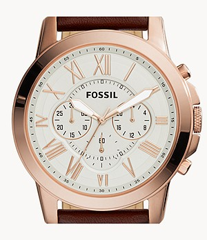

For example, if you are designing a brand new website for someone, most times you will have to make sure the prototype looks finished by inserting text or photos or what have you. The purpose of this is so the person viewing the prototype has a chance to actually feel and understand the idea behind what you have created. Now in some circumstances, designers may use squares and rectangles to help you visualize what should and could be in a specific location.We all have our own techniques, but one of the most effective techniques is to actually put some text where text goes and some pictures where pictures go to make sure everyone can see the vision you’ve created.
